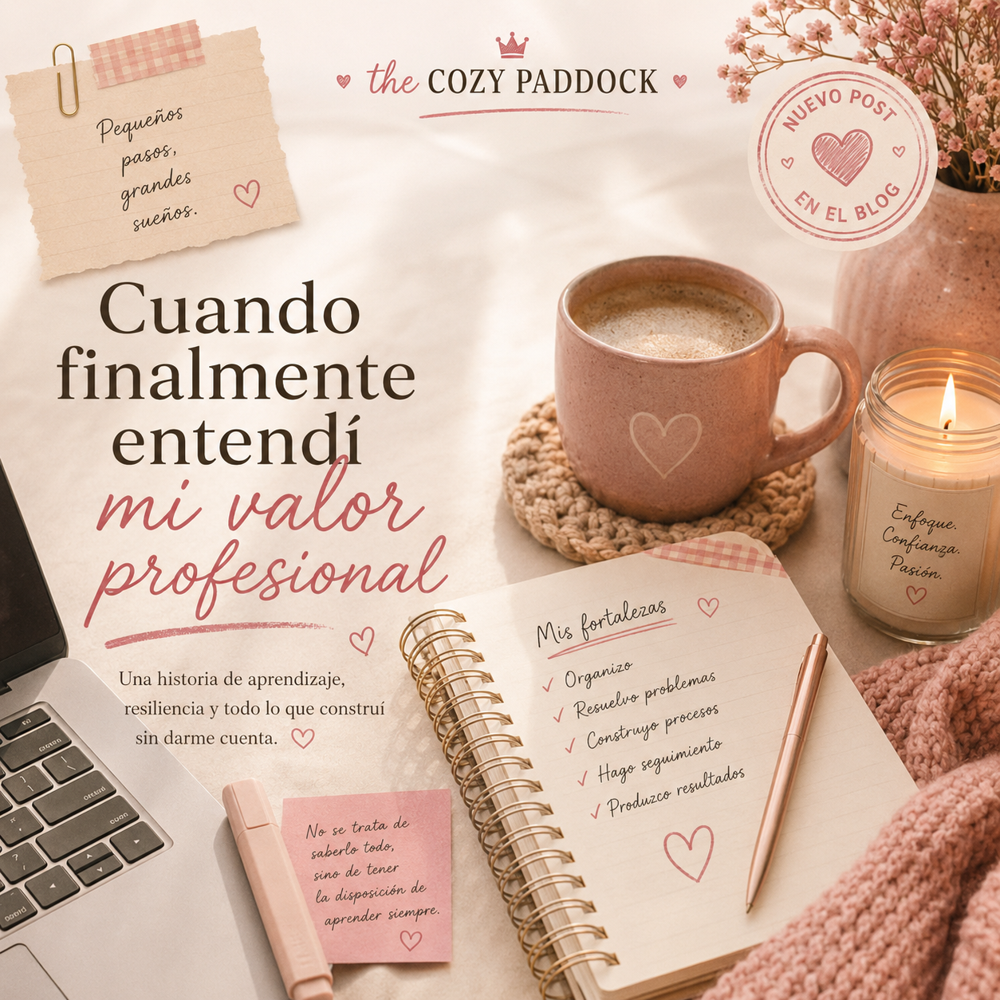

Cuando finalmente entendí mi valor profesional
Hace unas semanas me senté a hacer algo que llevaba mucho tiempo aplazando: actualizar mi hoja de vida.
No era la primera vez que lo hacía. Todos, en algún momento, abrimos ese documento para agregar un nuevo trabajo, cambiar unas fechas o actualizar un cargo. Pero esta vez decidí hacerlo diferente.
En lugar de sentarme sola frente al computador, abrí ChatGPT y le pedí algo muy específico: quería que me entrevistara. No quería que simplemente redactara mejor mi hoja de vida. Quería entender realmente qué había hecho en cada uno de mis trabajos para poder plasmarlo de la mejor manera posible.
Pensé que iba a salir de esa conversación con una hoja de vida más bonita. Lo que no esperaba era salir entendiendo mi propia historia profesional de una forma completamente distinta.
Porque mientras respondía pregunta tras pregunta, me di cuenta de algo que me dejó pensando durante varios días. Durante mucho tiempo, yo había creído una historia sobre mí que no era del todo cierta.
Hace algunos años trabajé en una empresa en la que aprendí muchísimo. Entré con muchísimas ganas de crecer. Era una empresa que ya conocía porque había trabajado allí muchos años antes, cuando apenas estaba empezando. Ahora volvía en un momento completamente diferente, tanto para la empresa como para mí.
Se suponía que iba a reemplazar a una persona que llevaba años construyendo procesos. Desde el principio fui muy clara: nunca había administrado una empresa de ese tamaño y necesitaba aprender.
Me dijeron que me enseñarían. La realidad fue distinta.
La persona que debía hacer el empalme ya estaba en otro trabajo y apenas tenía tiempo. Así que aprendí sobre la marcha. Como creo que hago con casi todo en mi vida, simplemente empecé a resolver.
Si aparecía un problema, buscaba una solución. Si había un proceso que organizar, me sentaba hasta entenderlo. Si alguien necesitaba algo, encontraba la manera de hacerlo. Nunca pensé demasiado en si eso estaba dentro de mis funciones o no. Simplemente hacía lo que sentía que estaba en mis manos para apoyar porque esa es mi esencia misma como persona.
Con el tiempo aprendí muchísimo. Aprendí de personas, de procesos, de indicadores, de administrar problemas que aparecían todos los días. Aprendí una expresión que hasta ese momento nunca había escuchado: apagar incendios. Y, curiosamente, descubrí que era buena haciéndolo.
Pero también empecé a chocar con algunas decisiones con las que no estaba de acuerdo. Siempre he tenido dificultades para quedarme callada cuando siento que algo es injusto, y esa forma de ser empezó a afectar mi relación con la gerencia.
Después de tres años decidí renunciar. Y el día que presenté mi renuncia escuché una frase que, sin saberlo, me acompañaría durante mucho tiempo:
Recuerdo muy poco del resto de la conversación. Pero esa frase sí la recuerdo perfectamente.
Lo curioso es que hoy, viéndolo en retrospectiva, creo que lo peor no fue escucharla. Lo peor fue creerla.
Porque durante años esa frase se convirtió en la explicación silenciosa de cualquier inseguridad profesional que tenía. Cada vez que empezaba un trabajo nuevo pensaba que, en cualquier momento, alguien iba a descubrir que realmente no era tan buena.
Cada vez que me enfrentaba a algo que no sabía hacer, esa voz aparecía otra vez. "¿Y si tenía razón?" Nunca lo decía en voz alta. Simplemente vivía con esa sensación constante de que, tal vez, yo no tenía nada realmente valioso que aportar.
Después de esa empresa vinieron otras experiencias. Aprendí muchísimo sobre recursos humanos. Aprendí herramientas tecnológicas que años atrás ni siquiera sabía que existían. Volví a trabajar en la empresa familiar. Empecé a liderar proyectos que antes me habrían parecido imposibles.
Y, sin darme cuenta, también fui descubriendo algo sobre mí. Descubrí que hay una parte de mi trabajo que disfruto profundamente. Me encanta organizar empresas. Me encanta encontrar procesos que pueden hacerse mejor. Me encanta convertir ideas desordenadas en procedimientos claros.Me encanta que alguien llegue con un problema y mi cabeza empiece inmediatamente a pensar en posibles soluciones.
Y, sobre todo, descubrí que soy muy buena haciendo seguimiento. Porque encontrar una solución es importante. Pero asegurarse de que realmente funcione...eso me apasiona. Nunca había puesto esas ideas en palabras. Simplemente hacía mi trabajo.
Y entonces llegó aquella conversación para actualizar mi hoja de vida. Mientras ChatGPT seguía haciéndome preguntas, empecé a responder casi por inercia.
Empezamos a hablar de aquella empresa en la que había trabajado durante tres años y, por primera vez, alguien me hizo preguntas que yo nunca me había hecho sobre ese trabajo.
No me preguntó simplemente cuál era mi cargo. Me preguntó cómo estaba organizada la empresa. Qué hacía yo realmente. Qué responsabilidades tenía. Qué procesos había construido. Qué había cambiado gracias a mi trabajo. Y, sobre todo, qué había hecho yo durante esos tres años que demostrara que había estado a la altura de la posición que ocupaba.
Y ahí empecé a recordar. Recordé que una de las primeras cosas que me pidieron, incluso antes de contratarme, fue buscar la manera de estandarizar los informes de las diferentes áreas de la empresa. Recordé que presenté una propuesta utilizando Power BI y esa fue una de las razones por las que finalmente me contrataron.
Recordé que, aunque había llegado a una empresa mucho más grande y establecida de la que había conocido años atrás, aprendí sobre la marcha. Recordé los procesos. Las decisiones. Los problemas. Los incendios. Las personas.
Las cosas que nadie me había enseñado y que terminé aprendiendo porque simplemente había que resolverlas.
Y entonces la conversación llegó a una pregunta mucho más difícil:
¿En qué eres realmente buena profesionalmente?
Mi respuesta fue:
Después agregué algo más:
También soy muy buena haciendo seguimiento.
Y mientras escribía esa respuesta pensé:
Poco a poco dejé de responder como quien llena un documento. Empecé a escuchar mi propia historia. Y fue entonces cuando entendí algo que nunca había visto.
Durante años había mirado mi carrera profesional como una lista de cargos. Nunca me había detenido a mirar la lista de habilidades que había construido.
La gerente de aquella empresa había resumido tres años de mi vida en una sola frase. Y, sin darme cuenta, yo había hecho exactamente lo mismo. Había tomado una experiencia completa, con todo lo que aprendí, todo lo que construí, todos los problemas que resolví y todo lo que aporté, y la había reducido a:
Me gustaría decir que desde ese día nunca más volví a dudar de mí. Pero no sería verdad. Todavía hay días en los que esa voz aparece. Todavía hay momentos en los que me pregunto si realmente soy tan buena como otras personas creen.
La diferencia es que hoy ya no la escucho igual. Porque ahora tengo evidencia. Sé que soy buena organizando. Sé que disfruto construir procesos. Sé que me gusta apagar incendios. Sé que encuentro satisfacción produciendo resultados. Sé que soy la persona que hace seguimiento hasta que las cosas realmente suceden.
Y, sobre todo, entendí que ser humilde no significa minimizarse. No tengo que saberlo todo para ser una buena profesional. Puedo equivocarme. Puedo llegar a un lugar sin conocer todos los procesos. Puedo necesitar que alguien me enseñe algo. Puedo no tener una respuesta inmediatamente. Y nada de eso significa que no sea capaz. Reconocer lo que uno sabe hacer no es arrogancia. Es justicia con uno mismo.
Creo que eso fue lo más importante que me dejó aquella conversación. Yo pensé que estaba usando inteligencia artificial para mejorar mi hoja de vida. En realidad, estaba usando una herramienta que me estaba haciendo las preguntas que yo nunca me había hecho.
Y las respuestas ya estaban ahí. En mis años de experiencia. En los problemas que había resuelto. En las empresas que había ayudado a organizar. En los procesos que había construido. En las cosas que había aprendido sin siquiera darme cuenta. La inteligencia artificial no descubrió mi valor profesional. Me ayudó a verlo.
Si alguna vez has sentido que no tienes nada especial que aportar profesionalmente, quiero proponerte algo. Abre tu hoja de vida. Pero no para corregir una fecha o cambiar un cargo. Léela. Hazte preguntas. ¿Qué problemas resolviste? ¿Qué aprendiste? ¿Qué procesos mejoraste? ¿De qué cosas se encargaban porque confiaban en ti? ¿Qué sabes hacer hoy que hace cinco o diez años no sabías? Y, sobre todo, ¿qué haces tan naturalmente que ni siquiera lo consideras una habilidad?
Tal vez, como me pasó a mí, descubras que durante años has estado viendo tu carrera a través de la opinión de terceros. Y que, mientras escuchabas esa voz diciéndote que no eras suficiente, habías construido una historia profesional mucho más grande de la que eras capaz de ver. Yo todavía estoy aprendiendo a creer en esa historia. Pero al menos ahora sé algo que antes no sabía.
Sé lo que sí sé hacer.
About The Cozy Paddock
The Cozy Paddock es un espacio donde la Fórmula 1 se vive desde una perspectiva más suave y femenina.
Creado para chicas que quieren entender, disfrutar y experimentar el deporte de una forma simple, acogedora y bonita.
The Cozy Paddock is a space where Formula 1 meets a softer, more feminine perspective.
Created for girls who want to understand, enjoy, and experience the sport in a simple, cozy, and beautiful way.
Autoras

Mery Ramirez

Sheyla Franco

Mayra Torreblanca